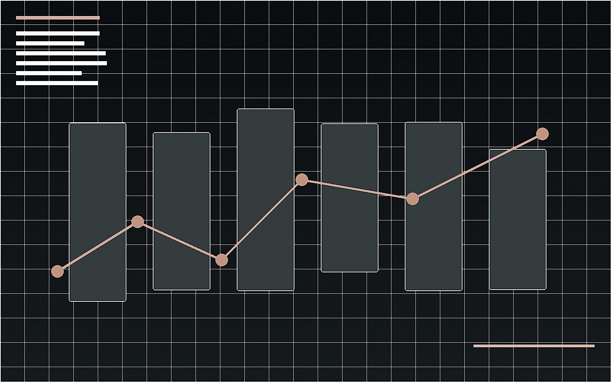

活动空间预览
用视觉化方式展示大型活动中的空间分区、服务节点和人流组织逻辑， 体现从现场执行经验延伸到关卡动线分析的思考方式。
Live Space
以线下活动现场为对象，分析客流入口、检票安检、观演分区、服务点位和离场疏散， 将活动空间拆解为可读的白盒结构与玩家式动线体验。

用视觉化方式展示大型活动中的空间分区、服务节点和人流组织逻辑， 体现从现场执行经验延伸到关卡动线分析的思考方式。
2.1 WHITEBOX FLOW
以 2023 年 12 月 16-17 日广东省奥林匹克体育中心北广场为核心分析对象， 将音乐节场地拆解为外部到达、预检分流、集中安检、观演分区、服务补给和离场疏散六个动线阶段。
奥体中心外部客流可拆为三股：黄村地铁站方向作为主入口，大观南路方向承接北侧到达， 西门方向承担补充分流。北广场前置排队缓冲区，避免观众直接挤压检票与安检大厅。
北广场适合承载大体量临时活动，但需要把“进场高峰”和“演出切场”视为主要风险点。 黄村地铁站方向可作为主入口，大观南路与西门方向作为补充分流入口；安检后进入开放区时， 应通过导视、围栏和工作人员引导，把人流导向不同票区，避免所有观众在舞台正中线堆积。
该案例用于展示大型线下活动中的空间分区、客流分层、服务点位和现场执行复盘能力。